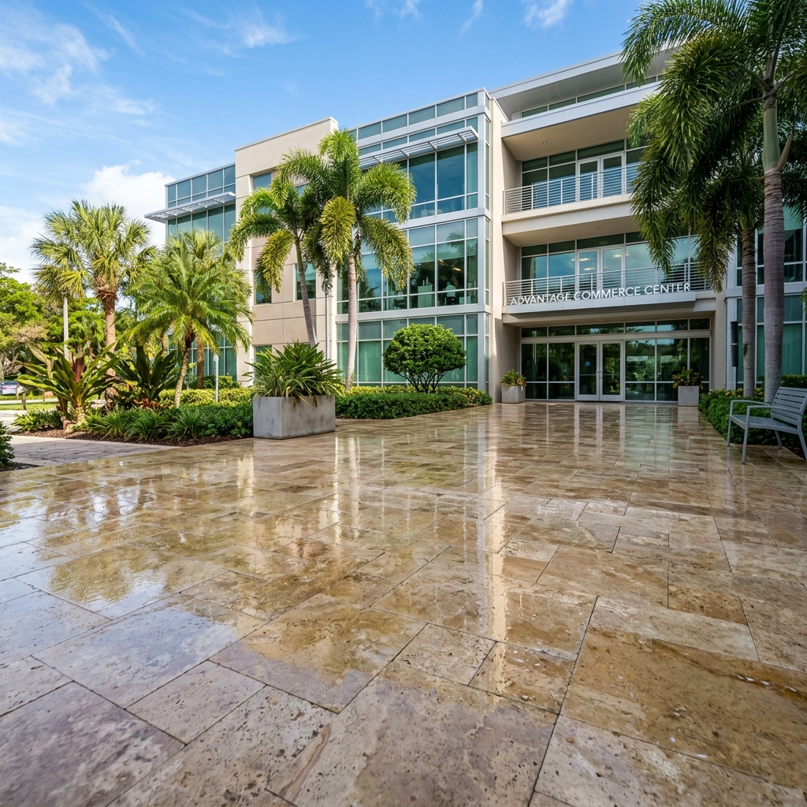
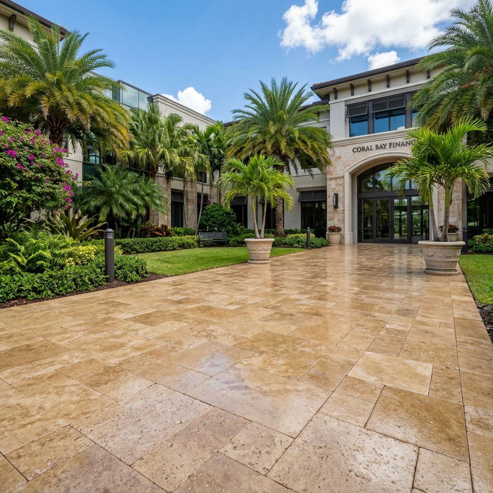
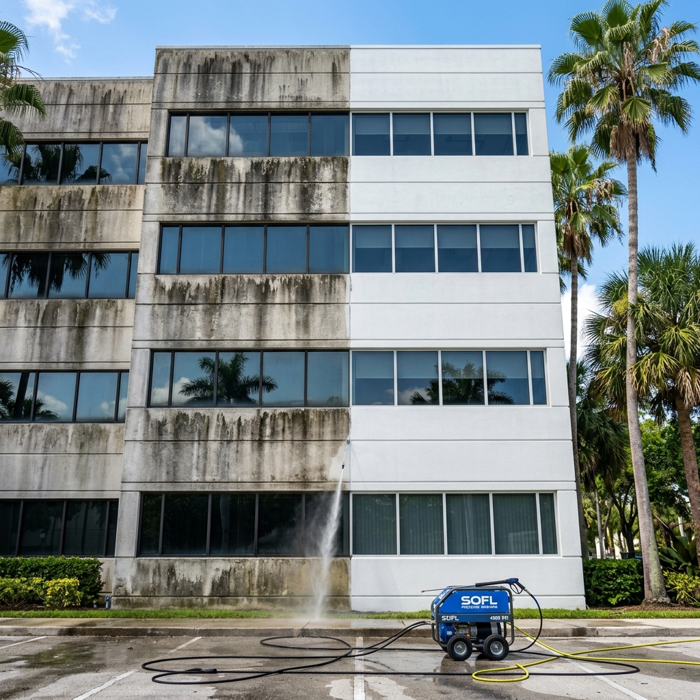
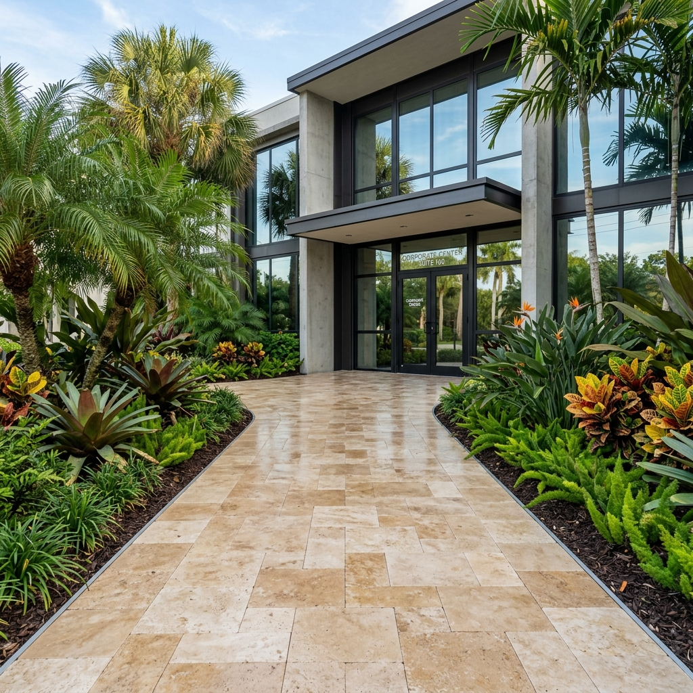
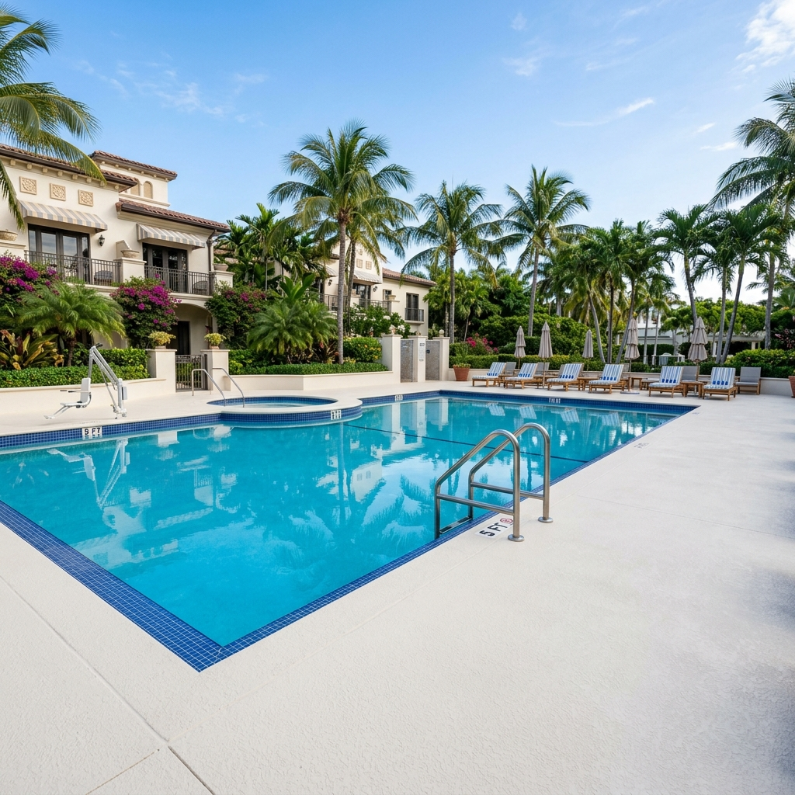

Paver Sealing in Miami: The Complete Guide for Property Managers
Everything you need to know about protecting your commercial paver surfaces in South Florida — from process and products to costs and contractor selection.
In This Guide
- Why Paver Sealing Is Critical for South Florida Commercial Properties
- Types of Pavers in South Florida Commercial Properties
- The Commercial Paver Sealing Process
- Types of Paver Sealers: Which Is Right for Your Property?
- How Often Should Commercial Pavers Be Sealed in Miami?
- Paver Sealing Cost for Commercial Properties in Miami
- How to Choose a Paver Sealing Company in Miami
- Frequently Asked Questions
Paver sealing in Miami isn't optional — it's a prerequisite for protecting one of your property's most visible and traffic-heavy assets. South Florida's combination of relentless UV radiation, year-round humidity, salt air exposure, and seasonal downpours creates a uniquely hostile environment for exterior paver surfaces. Without professional sealing, commercial pavers degrade faster here than in almost any other U.S. market.
For property managers and HOA boards across Miami, Fort Lauderdale, and Broward County, unsealed pavers represent more than an aesthetic concern. They create slip hazards from algae growth, accelerate structural shifting from joint sand loss, and steadily erode the curb appeal that directly impacts property value and tenant perception.
This guide covers everything a commercial property decision-maker needs to know about paver cleaning and sealing in Miami — from the technical process and product selection to realistic cost ranges and how to identify a qualified contractor.

Why Paver Sealing Is Critical for South Florida Commercial Properties
Understanding why pavers degrade faster in South Florida is the first step toward building a proactive maintenance strategy. The same climate that makes Miami and Fort Lauderdale desirable for business also creates five distinct degradation vectors for exterior paver surfaces.
UV Degradation & Color Fading
South Florida receives over 3,100 hours of sunshine annually — among the highest in the continental United States. This intense, sustained UV exposure breaks down the pigments and binder materials in concrete, brick, and travertine pavers. Without a UV-resistant sealant, pavers lose their original color within 12–18 months of installation. What was once a rich, warm tone becomes a washed-out, chalky surface that makes the entire property look neglected.
Humidity, Mold & Algae Growth
Average relative humidity in Miami hovers between 73–77% year-round. This constant moisture creates an ideal breeding ground for mold, mildew, and algae on porous paver surfaces. Beyond the obvious green and black discoloration, biological growth makes pavers dangerously slippery — a genuine liability concern for commercial properties. A properly applied, quality sealer creates a barrier that significantly inhibits biological colonization.
Salt Air Erosion (Coastal Miami & Fort Lauderdale)
Coastal commercial properties in Miami Beach, Fort Lauderdale, and barrier island locations face an additional threat: airborne salt. Salt crystals settle on paver surfaces and penetrate porous material, accelerating pitting, surface erosion, and paver efflorescence (white mineral deposits). Paver sealing in Fort Lauderdale and coastal Miami locations typically requires more frequent resealing schedules — often annually — to combat salt-driven degradation.
Joint Sand Loss & Paver Shifting
South Florida's heavy seasonal rains — averaging 62 inches annually — wash away joint sand at an accelerated rate. Once the sand between pavers is depleted, the interlocking system loses its structural integrity. Pavers begin to shift, rock, and settle unevenly, creating trip hazards and costly repair needs. This is why joint sand replacement with polymeric sand is a non-negotiable step in any professional paver sealing scope.
Staining from Irrigation & Organic Debris
South Florida's lush landscaping introduces its own challenges. Irrigation systems deposit mineral-rich water directly onto paver surfaces, leaving rust-colored iron stains and calcium deposits. Falling leaves, berries, tree sap, and mulch runoff create organic stains that set into unsealed pavers permanently. A quality sealer protects against stain absorption and makes regular maintenance cleaning significantly easier.

Types of Pavers in South Florida Commercial Properties
Not all pavers seal the same way. Material composition, porosity, surface texture, and installation method all influence which sealer product, application technique, and maintenance schedule is appropriate. Here are the four most common paver types found in commercial properties across Miami, Fort Lauderdale, and Broward County.
Brick Pavers
Clay-based brick pavers are durable and resistant to color fading, but their porous surface absorbs moisture quickly. They require a penetrating or semi-penetrating sealer that allows the brick to breathe while blocking water and stain infiltration. Typically found in commercial walkways, building entries, and streetscape applications across Miami-Dade County.
Concrete Pavers
The most common commercial paver type in South Florida. Concrete pavers are manufactured in a wide range of colors and profiles but are highly susceptible to UV fading and efflorescence. They benefit significantly from a color-enhancing sealer that restores and locks in the original pigment. Joint stabilization with polymeric sand is particularly important for concrete paver installations.
Travertine Pavers
Travertine paver sealing in Miami is one of the most common scopes we encounter. Travertine is the premium paver material of choice for upscale commercial properties, hotel pool decks, and Class A office entries throughout South Florida. It's a natural stone with an elegant, warm appearance — but it's also highly porous and particularly sensitive to acid rain, chemical cleaners, and incorrect pressure washing. Travertine requires a specialized sealer applied at lower pressure with careful attention to the stone's natural variations.
Interlocking Pavers
Engineered for high-traffic commercial applications — parking areas, loading zones, and heavy-use walkways. Interlocking pavers rely entirely on their joint sand system for structural stability, making polymeric sand replacement and joint sealing critical during the sealing process. A penetrating sealer with paver stabilization properties is the preferred treatment for interlocking systems.
Key takeaway: The sealer product, application method, and pressure settings must be matched to the specific paver material. Applying the wrong sealer type to travertine, for example, can cause permanent discoloration or trapped moisture damage. This is why surface evaluation and material identification is always the first step in any professional paver sealing near me scope.
The Commercial Paver Sealing Process
Professional paver cleaning and sealing in Miami follows a systematic, multi-step process. Each step exists for a technical reason — skipping any one of them compromises the entire result. Here's the process that any reputable commercial paver sealing near me provider should follow.
1. Surface Evaluation & Material Identification
Before any equipment touches the surface, a qualified technician evaluates the paver type, surface condition, existing sealant (if any), joint sand integrity, and contamination level. This step determines the correct pressure settings, cleaning chemistry, sealer product, and application method. Skipping this evaluation — and jumping straight to quoting — is the most common shortcut taken by unqualified contractors.
2. Power Washing & Deep Cleaning
The entire paver surface is cleaned using commercial-grade pressure washing equipment calibrated to the specific paver material. Concrete pavers tolerate 2,500–3,000 PSI; travertine requires significantly lower pressure (800–1,200 PSI) to avoid surface etching. Chemical treatments are applied to address biological growth (algae, mold, mildew), oil stains, rust deposits, and efflorescence. This step alone can take a full day for larger commercial properties.
3. Joint Sand Replacement
Depleted, contaminated, or failing joint sand is removed and replaced with high-quality polymeric sand. Unlike regular sand, polymeric sand contains binding agents that harden when activated with moisture, creating a semi-rigid joint that resists washout, weed growth, and ant intrusion. This step is critical for both paver stabilization and long-term sealer performance — sealer applied over failing joints will not hold.
4. Drying Period
After cleaning and sand replacement, the paver surface must dry completely before sealer application. In South Florida's humidity, this requires a minimum of 24–48 hours. Applying sealer to a surface that retains moisture will trap water beneath the sealer film, causing white hazing, bubbling, and premature failure. Experienced contractors in Miami schedule this drying period into the project timeline from the start.
5. Sealer Application
The selected sealer is applied using a professional sprayer, roller, or combination method depending on the paver type and sealer product. Most commercial applications require two coats — a penetrating base coat followed by a finish coat — with adequate dry time between coats. Application should be done in low-wind, temperate conditions (ideally morning or late afternoon in South Florida) for optimal penetration and leveling.
6. Curing & Final Inspection
After application, the sealer requires a minimum of 24 hours to cure before foot traffic and 48–72 hours before vehicle traffic. The completed surface is inspected for uniform coverage, consistent sheen level, proper edge sealing, and any areas requiring touch-up. For commercial properties, scope documentation is provided for property management files and HOA requirements.

Types of Paver Sealers: Which Is Right for Your Property?
Choosing the right sealer is as important as the application process itself. The three primary sealer categories each serve different aesthetic and functional purposes. Here's a comparison to help you make an informed decision for your commercial property.
| Feature | Solvent-Based Sealer | Water-Based Sealer | Penetrating Sealer |
|---|---|---|---|
| Finish | High-gloss wet look | Low sheen / satin | No visible change |
| Color Enhancement | Maximum | Moderate | None |
| VOC Level | High (requires ventilation) | Low | Very low |
| Durability | 2–3 years | 1–2 years | 3–5 years |
| Moisture Breathability | Low (film-forming) | Moderate | High (vapor-permeable) |
| Best For | Decorative entries, low-moisture areas | General commercial use, pool decks | Travertine, natural stone, high-traffic areas |
| Slip Resistance | Lower (additive recommended) | Good | Excellent (no film) |
Wet-Look (Gloss) Sealers
Wet-look sealers deliver maximum color enhancement and a rich, glossy finish that makes pavers look freshly installed. They're ideal for premium entry courtyards, decorative walkways, and areas where visual impact is the priority. Typically solvent-based, these sealers create a noticeable surface film. In South Florida, they're best suited for sheltered or semi-sheltered areas with lower moisture exposure.
Matte / Natural-Look Sealers
A natural-look sealer or matte sealer provides surface protection without altering the paver's original appearance. These are the default recommendation for most commercial properties — they protect against UV damage, staining, and water intrusion without creating an artificial sheen. Particularly well-suited for properties with HOA requirements that restrict surface appearance changes.
Penetrating Sealers
Penetrating sealers absorb into the paver material rather than forming a surface film. They provide invisible protection that is fully vapor-permeable — critical for preventing moisture entrapment in South Florida's humid climate. This is the recommended sealer type for travertine pavers, natural stone, and commercial applications where slip resistance and breathability are priorities.
Livane's recommendation: For most commercial properties in Miami and Fort Lauderdale, we recommend a penetrating sealer with UV-resistant properties for travertine and natural stone, and a water-based matte sealer for concrete and brick pavers. Wet-look sealers are reserved for specific decorative applications where the property team explicitly desires the enhanced finish. We always discuss sealer selection and finish expectations during the surface evaluation phase.
How Often Should Commercial Pavers Be Sealed in Miami?
The short answer: every 2–3 years for most commercial paver installations in South Florida. But the actual frequency depends on several property-specific factors.
- Standard commercial properties (inland): Every 2–3 years for concrete and brick pavers; every 3–4 years for penetrating-sealed travertine.
- Coastal properties (Miami Beach, Fort Lauderdale beachside): Annually or every 18 months due to salt air exposure.
- High-traffic areas (building entries, retail walkways): Every 18–24 months, as foot traffic accelerates surface wear on the sealer film.
- Pool decks and wet areas: Every 2 years with slip-resistant sealer reapplication.
Signs Your Pavers Need Resealing
- Water no longer beads on the surface — it absorbs immediately
- Original color has visibly faded or become patchy
- Joint sand is depleted or washing away
- Algae, mold, or biological growth is returning between cleanings
- Surface feels rough or chalky compared to recently sealed areas
- White efflorescence deposits are appearing
Maintenance tip: Property managers should incorporate a semi-annual visual paver inspection into their hardscape maintenance schedule. Catching early signs of sealer breakdown allows for timely resealing rather than a full clean-and-reseal cycle, significantly reducing long-term maintenance costs.
Paver Sealing Cost for Commercial Properties in Miami
Paver sealing cost per square foot in Miami varies based on several factors. Here are general ranges for commercial projects:
| Service Scope | Cost Range (per sq ft) | Notes |
|---|---|---|
| Sealing only (clean pavers, good condition) | $1.50 – $2.50 | Minimal prep, no sand replacement needed |
| Clean + Seal (standard condition) | $2.50 – $4.00 | Pressure washing, light sand touch-up, sealing |
| Full restoration + Seal (deteriorated) | $3.50 – $5.50 | Heavy cleaning, chemical treatment, full sand replacement, 2-coat sealing |
| Travertine specialist scope | $4.00 – $6.00 | Low-pressure cleaning, stone-specific sealer, premium finish |
What Impacts Cost
- Total square footage: Larger projects typically have lower per-sq-ft rates due to mobilization efficiency.
- Paver type: Travertine and natural stone require specialized products and techniques, increasing material and labor costs.
- Current condition: Heavily deteriorated surfaces require more prep time, chemical treatments, and potentially multiple cleaning passes.
- Accessibility: Ground-floor patios are simpler than elevated decks, gated entries, or properties with limited equipment access.
- Sealer product: Premium penetrating sealers and solvent-based wet-look products cost more than standard water-based sealers.
The value perspective: Professional paver sealing at $3–5/sq ft every 2–3 years is significantly more cost-effective than paver replacement at $15–25/sq ft. A proactive sealing schedule extends paver lifespan by 10–15 years and maintains the commercial property curb appeal that directly affects tenant retention, lease rates, and property valuation.
Why we evaluate before quoting: At Livane Renovation, we don't provide blind per-square-foot estimates. Every commercial paver sealing scope begins with a condition evaluation — because a 5,000 sq ft courtyard in good condition is a fundamentally different project than a 5,000 sq ft courtyard with failing joints, heavy biological growth, and depleted sealer. The evaluation ensures accurate pricing and prevents scope surprises during execution.

How to Choose a Paver Sealing Company in Miami
Not every pressure washing company is qualified for commercial paver sealing. The skills, equipment, and product knowledge required for a 6,000 sq ft travertine courtyard are fundamentally different from a residential driveway. Here's what to look for when selecting the best paver sealing company in Miami.
Commercial Experience (Not Residential Driveway Work)
Commercial paver sealing involves larger scale, different material types, higher accountability standards, and coordination with property management teams. Ask for commercial project references, not residential before-and-after photos. A company that primarily seals residential driveways may not have the equipment, crew size, or scheduling discipline required for commercial scopes in Broward County or Miami-Dade.
Sealer Product Knowledge
A qualified contractor should be able to explain the difference between a solvent-based sealer vs water-based sealer, recommend a specific product for your paver type, and explain why. If a contractor offers one generic sealer for all paver types, that's a red flag. Different surfaces require different products — period.
Proper Evaluation Before Quoting
Any company that quotes a per-square-foot price without seeing the surface condition, identifying the paver material, and assessing joint sand integrity is guessing. Professional paver sealing in Miami starts with evaluation, not pricing.
Portfolio and References
Ask for documented commercial projects — ideally with before and after photography. Look for properties similar to yours in scale, paver type, and geographic location. A company with a strong portfolio in paver sealing Fort Lauderdale and Miami commercial properties demonstrates proven capability.
Red Flags to Avoid
- No cleaning step before sealing — sealer applied over dirty pavers will fail
- Using the wrong sealer type for your paver material (e.g., film-forming sealer on travertine)
- No joint sand service offered — if they don't address joints, they don't understand the process
- Quoting without visiting the property or requesting photos
- Unable to name the specific sealer product they use
- No commercial references or portfolio
For combined interior and exterior scopes — for instance, floor restoration inside and paver sealing outside — working with a single partner like Livane streamlines scheduling and reduces vendor coordination overhead. Learn more about how we handle multi-scope project support.
Frequently Asked Questions
Ready to Protect Your Commercial Pavers?
Share photos and describe the condition of your exterior paver surfaces. Livane Renovation will assess and respond with the right scope — from straightforward resealing to full restoration.